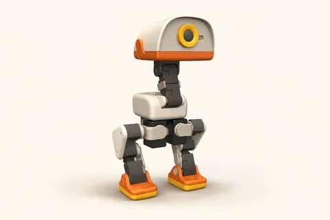
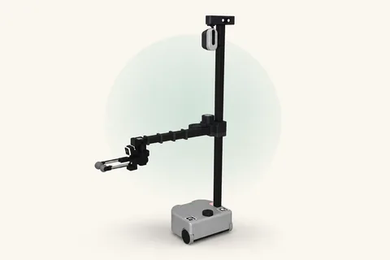
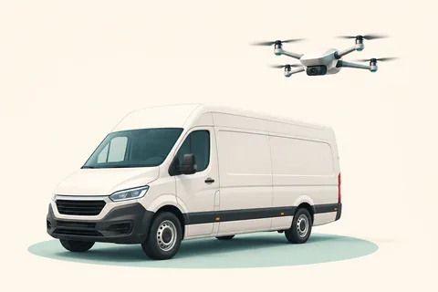

MuJoCo 仿真画面
MuJoCo 仿真画面
01 / 研究与演示
AOR让机器人互相帮忙。
地面的车与空中的无人机怎样会合？一个机器人能否把伙伴送到新的位置？从三个仿真场景，认识不同能力之间的协作。
AOR = Autonomous OR。OR 是运筹学：用数学方法帮助选择分工、路线与行动时间。
进入 AOR，看协作演示无人实验室 · AUTONOMOUS SYSTEMS LAB
会走、会飞、会搬运。
这里记录机器人、车辆与无人机的仿真实验，
探索它们如何分工、会合与协作。
用仿真观察行动，用运筹学思考选择。



EXPLORE / 从这里开始
从演示认识问题，再往里看。
MuJoCo 仿真画面
01 / 研究与演示
地面的车与空中的无人机怎样会合？一个机器人能否把伙伴送到新的位置？从三个仿真场景，认识不同能力之间的协作。
AOR = Autonomous OR。OR 是运筹学：用数学方法帮助选择分工、路线与行动时间。
进入 AOR，看协作演示02 / 地空实验
从无人机跟随车辆开始，理解地空协作。已有公开基线使用仿真真值坐标，视觉跟踪仍是后续方向。
查看项目记录 ↗03 / 知识小笔记
从小 Duck 的身体，到机械臂与地空会合。七张图解，把机器人与仿真的基础知识讲清楚。
从一张图开始 ↗这些是仿真实验与研究记录。实际控制、逻辑代理和未验证部分，在各项目中分别说明。
THE QUESTION / 研究方向
我的研究背景是多式联运。
从交通方式之间的衔接，到机器人之间的协作，我关心的始终是选择如何影响整体结果。
这是向机器人协作迁移的研究设想。City2049 是长期愿景，AOR 是其中的具体探索。
把任务交给能力合适的伙伴。
考虑路程、可达范围和衔接位置。
把等待和共享资源一起考虑。
KEEP EXPLORING / 多了解一点
这是一条研究路线，不代表每个环节都已完成。具体进展以项目记录为准。
在 GTA 等虚拟世界中，研究步行、车辆与其他交通方式的路线和换乘选择。
在导航与操作能力具备后，研究多机器人怎样分配任务、安排顺序。
让车、无人机、机器人与船各展所长，是关于未来协作的长期愿景。
以上为研究设想，不代表已具备完整执行能力。